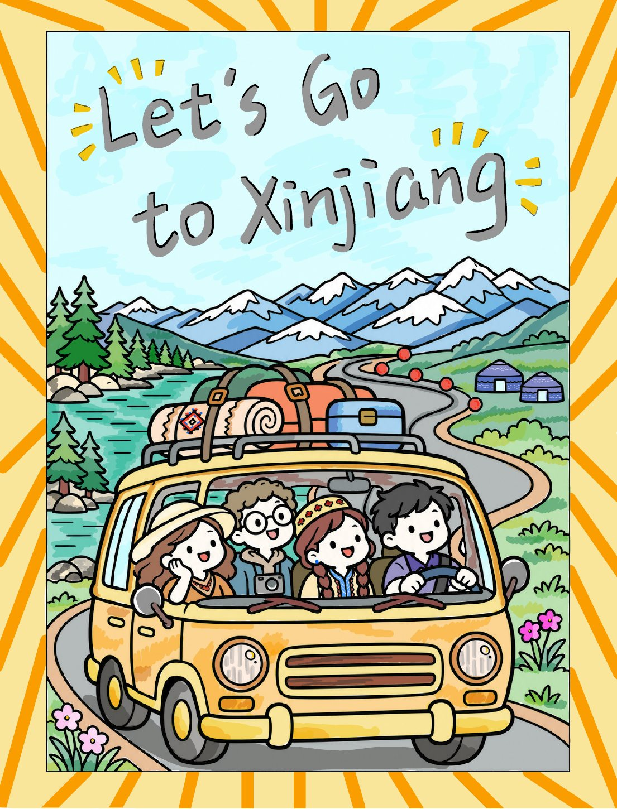
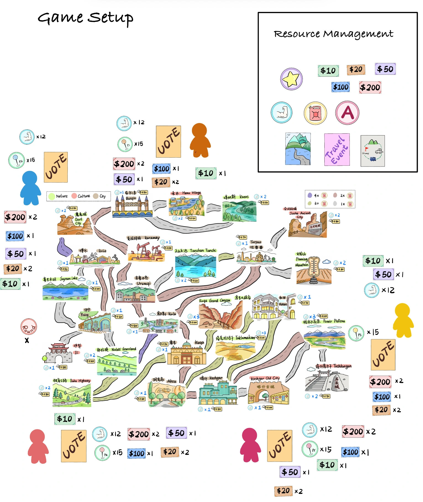
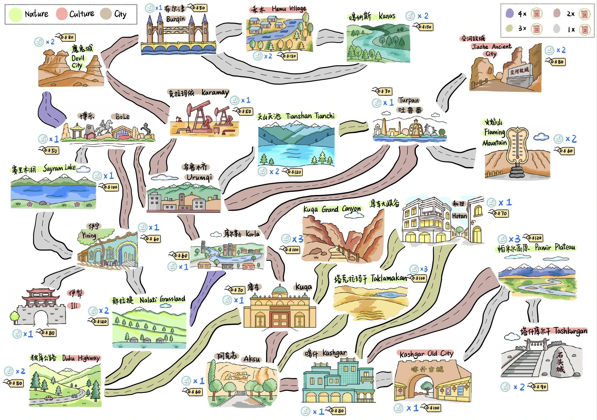
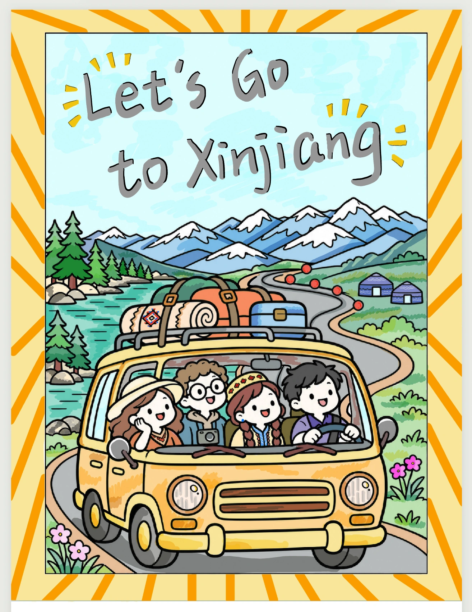
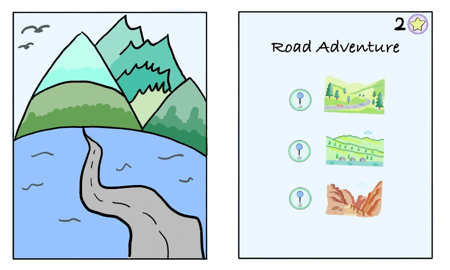
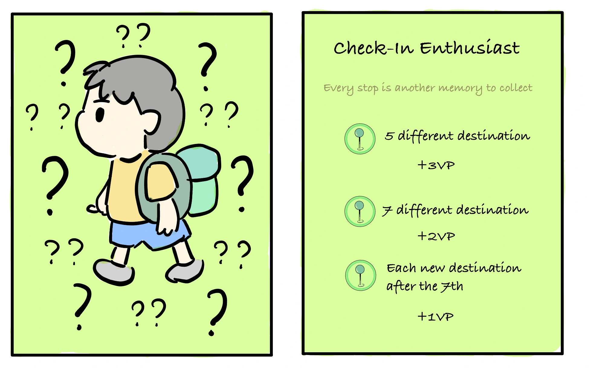

Let’s Go to Xinjiang
A tabletop road trip through Xinjiang一款新疆自驾主题桌游
Share a car, vote on the next stop, and see whether you have enough gas to make it home.同乘一辆车，投票决定下一站，看看这箱油能带大家走多远。
Rulebook规则书
Open full PDF打开完整 PDF
Project Overview项目概览
Let’s Go to Xinjiang is a tabletop board game about a road trip through Xinjiang. Players share a car, discuss routes, vote on the next stop, and respond to events along the way. Everyone shares the car’s fuel, while each player manages their own money and stamina and pursues a hidden objective.《Let’s Go to Xinjiang》是一款以新疆自驾为主题的实体桌游。玩家同乘一辆车，商量路线、投票决定下一站，并应对沿途事件。汽车油量由大家共享，每个人管理自己的金钱和体力，同时争取完成隐藏目标。
I wanted the discussion to feel like planning a trip with friends. One person wants to squeeze in another stop. Someone else asks, “Do we have enough gas to get back if we make one more stop?” The route depends on what the group agrees to, how much they have left, and what happens on the road.我希望玩家像一群朋友做旅行攻略一样讨论。有人想多去一个景点，有人担心油量不够返程。最终路线取决于大家怎样商量，以及剩余资源和途中发生的事。

Inspiration and Player Experience灵感与玩家体验
On a summer trip to Xinjiang with my family, I loved how often we found places worth stopping at along the road. Sometimes I wanted to visit a particular site, but my mom thought we were too tired for a strenuous stop. Other times I’d look forward to a destination the night before, only to find it was too far away once we planned the day together.暑假和家人去新疆时，我很喜欢沿途随时有值得停下来的地方。有时我很想去一个景点，但妈妈觉得大家太累了。有时我头一天就在期待第二天的目的地，全家排完行程才发现太远。
I chose a tabletop format so everyone could sit around the same map, make suggestions, and vote. Each role has reasons to advocate for different stops. When fuel is tight or an event changes the plan, I want to see who makes a case for a detour, who yields, and whether someone finds a route everyone can get behind. Different groups should come away with different trips and remember who changed their minds along the way.我选择桌游，让大家围着同一张地图提议、讨论和投票。每个角色都有理由争取不同的目的地。油量紧张或事件打乱计划时，我想看到谁会争取绕路、谁愿意让步，以及有没有人能找到大家都愿意走的路线。同一张地图应该能走出不同的行程，让玩家也记得是谁改变了全车人的主意。


Core Gameplay核心玩法
Shared fuel makes the next stop a group decision, while hidden objectives give each player a different reason to take a detour. The map shows the fuel cost of each route, so players can compare a proposed stop with what it leaves available afterward, including the return trip.共享油量让下一站成为集体决定，隐藏目标则让每个人有不同的绕路理由。地图标出各条路线的耗油量，方便大家判断多去一站后还能去哪，以及能否返程。
Personal money and stamina affect whether a player can check in at an attraction. Travel sets give the group reasons to fit several destinations into one trip. Events can change resources or make a previously overlooked city worth considering, sending everyone back to the map to revise the plan.个人金钱和体力决定玩家到达景点后能否打卡。旅行组合让大家有理由把多个目的地安排进同一次行程。事件可能改变资源，也可能让原本没考虑的城市成为新选项，大家需要重新看地图商量。
Playtesting and Iteration试玩与迭代
I simulated three sessions in ChatGPT before inviting friends. I played against it directly in the first session and had it play two and then three other roles. The objectives seldom clashed and everyone conceded quickly, so I moved to face-to-face testing to observe how players defended their routes and what made them reconsider.我先用 ChatGPT 模拟了三局。第一局我和它直接玩，之后分别让它扮演另外两名和三名玩家。目标很少冲突，大家也很快让步，因此我转向面对面试玩，观察玩家怎样争取路线、什么时候会改主意。
The first printed prototype used a black-and-white map and text-only cards. Players wrote down stops, events, check-ins, and remaining resources. Updating numbers after each decision interrupted the discussion. I designed resource tokens and revised the cards for the next physical prototype to test whether they reduce those pauses.第一版打印原型采用黑白地图和纯文字卡牌。玩家需要手写记录地点、事件、打卡和剩余资源。每次决定后修改数字会打断讨论。我为下一版实体原型设计了资源标记并改进卡牌，准备测试它们能否减少停顿。

Early groups chose the next stop by talking it through. I added letter markers and voting cards, but one vote still ended in a tie after a long discussion. I changed my own vote to keep the test moving. The revised rule follows the Break a Tie rule (p. 10) by shuffling one voting card per tied destination and drawing one, so the group can finish discussing before resolving a deadlock.早期完全靠口头商量。我加入字母标记和投票牌后，仍有一次长时间讨论后投出平票。我改了自己的票，让测试继续。新版平票规则（第 10 页）把平票选项对应的牌洗混后抽一张，让大家充分讨论后也能结束僵局。
By the fifth round of testing, I raised starting fuel from 12 to 32. I also revised the event deck to 40 cards, with 14 positive events, 14 negative events, nine group decisions, and three cross-region events. In Group Fuel Discount, everyone privately chooses how much to contribute before revealing their offers together. Small losses still matter. One group had exactly enough fuel to return until an event in Kuqa cost them two units of fuel. See Step 5 · Run Out of Resources (p. 13) for how fuel can end the trip.到第五轮试玩时，我把起始油量从 12 点提高到 32 点，并将事件牌调整为 40 张，包括正面事件和负面事件各 14 张、集体决策事件 9 张、跨区域事件 3 张。「团体加油优惠」要求大家先私下决定出多少钱，再一起亮出报价。小损失依然可能影响行程。有一组本来刚好够油返程，却在库车因事件失去 2 点油。油量何时会导致旅程结束，见步骤 5 · 资源耗尽（第 13 页）。
The first four-player group headed toward Nalati and the Duku Highway, then toward Kashgar. The cities along that route offered chances to resupply, and some stops counted toward several sets. I spread role objectives and travel sets across four directions, paired distant attractions in some sets, and introduced cross-region events. In round five, one group started north, turned toward Turpan with more than 20 fuel left, and also worked Sayram Lake and Tianchi into their itinerary.首次四人试玩时，玩家经那拉提和独库公路前往喀什。沿途城市多，方便尝试补给，一些景点还能同时推进多个组合。我把角色目标和旅行组合分散到东西南北，加入跨越较远的组合和跨区域事件。第五轮有一组先往北走，剩二十多点油时转向吐鲁番，后来还安排了赛里木湖和天山天池。
Visual and Information Design视觉与信息设计
Cards reuse the fuel, stamina, and other icons from the resource tokens. Card titles, flavor text, and effects have distinct places on the card. Travel set cards use destination images and check-in symbols, while role cards keep preferences and scoring conditions together.卡面沿用资源标记上的油量、体力等图标，并分开呈现名称、背景说明和实际效果。旅行组合卡用目的地图像和打卡符号呈现要求，角色卡把偏好和得分条件放在一起。
I drew a recognizable landmark for each attraction. The map legend distinguishes cities, natural attractions, and cultural attractions and uses route colors to show fuel costs from one to four. Letter markers let players refer to destinations by letter during discussion and voting. I love playful, hand-drawn illustrations, so I used that style across the map, cover, and cards. I wanted the game to feel like flipping through a sketchbook from a road trip.我为每个景点绘制了有代表性的地标。图例区分城市、自然景点和人文景点，路线颜色对应 1 到 4 点油耗。字母标记让玩家在讨论和投票时可以用字母指代目的地。我喜欢带点童趣的手绘插画，所以地图、封面和卡牌都用了这种风格。我希望玩家玩起来像在翻一本旅行手绘本。


Map Design地图设计
I drew a landmark for each stop. The road colors show how much fuel each route costs.我为每一站画了有代表性的地标，并用道路颜色标出不同路线的油耗。

Cover Design封面设计
I drew four travelers in one car to show what the game feels like: a road trip together.我画了四位同乘一辆车的旅伴，让封面一眼就能看出这是一次结伴自驾。

Travel Set Card · Road Adventure旅行组合卡 · Road Adventure
I reused the map illustrations so players can spot the stops they need at a glance.我沿用地图上的插画，让玩家一眼就能找到组合要求的目的地。

Secret Role Card · Check-In Enthusiast隐藏角色卡 · Check-In Enthusiast
I put check-in goals and their points together so players can quickly see what to aim for.我把打卡目标和对应分数放在一起，方便玩家快速了解自己的目标。Development and Next Steps开发与展望
After several rounds of testing the printed prototype, I revised tie resolution, starting fuel, the event deck, and the distribution of travel sets and role objectives. The rulebook shows the hand-drawn map, redesigned cards, and resource tokens. My next step is to produce those components and test them with friends.经过几轮打印原型试玩，我调整了平票处理、起始油量、事件牌构成，以及旅行组合和角色目标的分布。规则书中已经展示手绘地图、新版卡牌和资源标记。下一步是制作实体组件并继续和朋友试玩。
I want to see whether roles prompt different routes, what gets players to change their minds, and whether tie resolution keeps play moving. I’ll also check whether each direction offers worthwhile stops, whether fuel and events leave room to revise the plan, and whether physical components cut down on bookkeeping and rule lookups.我会观察角色是否能带来不同路线、玩家因何改变主意、平票能否顺利处理，以及各个方向是否都有值得争取的目的地。我也会测试油量和事件是否留出改计划的空间，以及实体组件能否减少手写记录和查规则。
References参考资料
The companion rulebook covers the full rules, components, and scoring. My family’s road trip through Xinjiang inspired the route discussions, changes of plan, and differing priorities. I looked to the Splendor rulebook for how it organizes information into sections.配套规则书介绍完整玩法、组件和结算方式。新疆家庭自驾为路线讨论、临时调整和不同目的地偏好提供了灵感。《Splendor》规则书是本项目组织规则书章节时的参考。